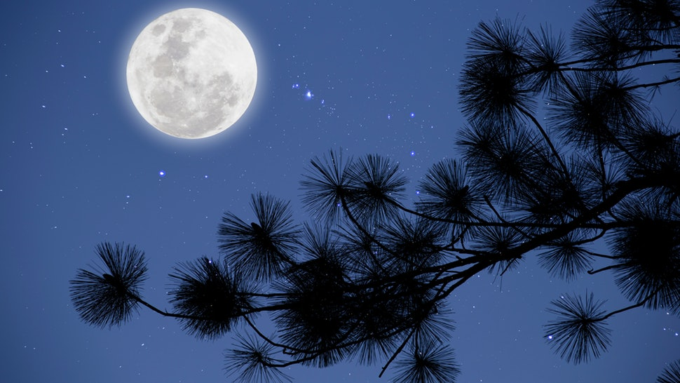
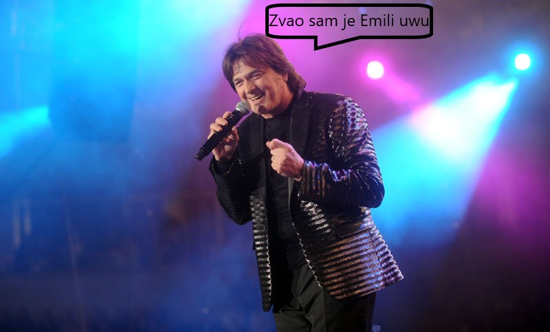

Dana 14.07.2017 jedan mladi momak skupio je hrabrosti da prvi put izadje sa devojkom. Nije znao sta da ocekuje. Kada je prvi put ugledao devojku nakon 4 dana dopisivanja kako koraca lagano ka njemu njegovo srce je zaigralo kao nikada pre. Kada se devojka konacno priblizila dovoljno blizu da je mogao jasno da vidi njeno lice bio je odusevljen. Prva stvar koja mu je zapalo za oko i zauvek ostala u njegovom secanju je jedan loknasti pramen kose koji je padao preko njenog neznog lica. Posle razmenjenih pozdrava bez ijedne reci uputili su se ka destinaciji koju oboje vole da li je to bila slucajnost da su oboje voleli isto mesto ili ipak ne. Kada su stigli na mesto koje su oboje zamislili buduci mladi par je od nervoze i nesigurnosti izabrao klupu koja im je prva zapala za oko, iako je ta klupa bila niska i ne tako specijalna u tom parku za njih ta klupa predstavlja najlepsu memoriju u njihovim zivotima uspomenu na tu nezaborvanu noc koju su obasjale zvezde i oci mlade devojke. Naravno bio je tu i mesec koji se mucio da probije svoje zrake kroz borove grane.
Te veceri tada stidljiv i ne tako pricljiv momak dobio je nadahnuce da te veceri prica kao nikada pre. Posle proteklih nekoliko sati dosla je i hladna noc julske veceri. Tada ne preterano obucena devojka cija je koza bila crvena od hladnoce pronasla je spas u deckovom zagrljaju. Posle nekoliko minuta razmenjivanja toplote decko je konacno skupio hrabrostio da predje na stvar i upitao je devojku da li bi joj smetalo da je poljubi. Sokirana devojka koju je tada zagrlila trema posle nekoliko sekundi koje su tada bile kao vecnost odgovorila je sa potvrdnim odgovorom koji je istog momenta zbacio kamen sa deckovog srca. Posle poljupca koji je tada njima delovao kao da je trajao citavu vecnost mladi par je tada spojio svoje poglede i blagim osmehom rekao sve. Naravno kao i za sve dosao je kraj i njihovog prvog izlaska, setajuci polako ka njenoj kuci devojka je pronasla smejo mesto u njegovom zagrljaju.
Jedna velika zanimljivost vezana za ovu devojku je ta da njena lepota nije ostala neopazena cak ni poznatim licnostima kao sto je Zdravko Čolić jedan od najpoznatijih pevaca balkana i sire, on je zadivljen njenom lepotom napisao pesmu posvecenu njoj.
